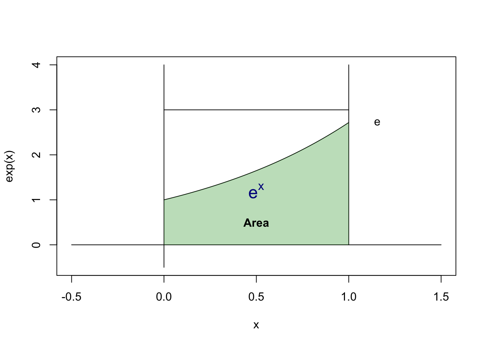

16 Monte Carlo
16.1 Monte Carlo Simulation of Intergation
16.1.1 Example 1
Estimating this intergal by Monte Carlo: \[ \theta = \int_{0}^{1} {e^x} dx = e-1 \]
The real integation is \(e-1\). But this is meaningless for those we can’t integrate easily.
The idea of Monte Carlo is, assuming there’s a area x from 0 to 1, y from 0 to M (a large number, greater than the maximum of function we’re estimating)
We’re calculting the green area in the plot, note that there’s a probability of random point in the green area is equal to their ratio of area.
Find any M, i.e., here we let \(M = 3 > e\)
\[ p = \frac{\text{Area of Green}}{\text{Area of Rectangular}} = \frac{S_G}{S_R} \]
Let \(X\) is a random variable with uniform distribution from 0 to 1, \(Y = e^X\), then the Intergal \(\hat{\theta} = S_G = p S_R = \mathbb{E}[\bar{Y}]\)
m <- 1000
x <- runif(m)
cat(c("Monte Carlo", mean(exp(x)), '\n'))Monte Carlo 1.71023613681694 cat(c("Real Intergation", exp(1)-1, '\n'))Real Intergation 1.71828182845905 16.1.2 Example 2: Improper Integral
Estimating this intergal by Monte Carlo: (F(x) here is CDF of normal distribution) \[ \theta = \int_{-\infty}^{x} {\frac{1}{\sqrt{2\pi}}e^{-\frac{t^2}{2}}} dt = F(x) \]
Let’s make transformation first:
\[\theta = (0.5+ \int_{0}^{x} {\frac{1}{\sqrt{2\pi}}e^{-\frac{t^2}{2}}} dt )=\frac{1}{2}+ \frac{1}{\sqrt{2\pi}} \int_{0}^{1} xe^{-\frac{(xy)^2}{2}}dy\]
y <- runif(m)
x <- 1
cat(c("Monte Carlo", 0.5 + x / sqrt(2 * pi) * mean(exp(-(x*y)^2/2)), '\n'))Monte Carlo 0.840837027284758 cat(c("Real Intergation", pnorm(1), '\n'))Real Intergation 0.841344746068543 Another idea is that, the sample EDF will converge to CDF. Thus, let’s generate normal random variables.
y <- rnorm(m)
x <- 1
cat(c("Monte Carlo", mean(y<=x), '\n'))Monte Carlo 0.842 cat(c("Real Intergation", pnorm(1), '\n'))Real Intergation 0.841344746068543 16.1.3 Variance
In the first example we use \(Y = e^X\) to estimate $ = _{0}^{1} {e^x} dx $
As \(X\sim U(0,1)\), it’s unbiased estimation since \(\mathbb{E}[Y] = \mathbb{E}[e^X] = e-1 = \theta\).
The variance is \(Var[Y] = \mathbb{E}[Y^2] - {[\mathbb{E}[Y]]}^2 = \frac{(e-1)(3-e)}{2} = 0.2420\)
[1] "variance is, 0.242035607452765"For the second example, we have two estimation:
\[X_1 \sim U(0,1) \Rightarrow Y_1 = \frac{1}{2} + \frac{1}{\sqrt{2\pi}} x e^{-\frac{xX_1}{2}}\]
x_1 <- runif(m)
x <- 1
y_1 <- 1/2+ x / sqrt(2 * pi) * exp(-(x*x_1)^2/2)
var(y_1)[1] 0.002347814\[X_2 \sim N(0,1) \Rightarrow \frac{Y_2}{\sqrt{2\pi}}\sim B(1,p)\]
x_2 <- rnorm(m)
x <- 1
y_2 <- (x_2<=x)
var(y_2)[1] 0.12902516.2 Variance Decrease
16.2.1 Antithetic Variates
\[U \sim U(0,1) \Rightarrow 1-U \sim U(0,1)\]
\[Z \sim N(0,1) \Rightarrow -Z \sim Z(0,1)\]
x_1 <- runif(m/2)
x <- 1
y_1a <- 1/2+ x / sqrt(2 * pi)* ((exp(-(x*x_1)^2/2) + exp(-(x*(1-x_1))^2/2))/2)
var(y_1a)[1] 8.304542e-05var(y_1)/var(y_1a)[1] 28.27144x_2 <- rnorm(m/2)
x <- 1
y_2a <- ((x_2<=x) + (-x_2 <= x)/2)
var(y_2a)[1] 0.1374138var(y_2)/var(y_2a)[1] 0.938952316.2.2 Control Variable
Estimating \(g(U)\) with \(Var[g(U)]\), optimizing by \(h(U) = g(U) + c [f(U)-\mu]\)
Then the variance become \(Var[g[U]] + c^2 Var[f[U]] +2c COV(g(X), f(X))\), which is minimized when \(c^* = - \frac{cov(g(X), f(X))}{Var[f(U)]}\)
\[Var[h(U)] = Var[g(U)] - \frac{[COV(g(X), f(X))]^2}{[Var[f(U)]]^2} \]
Example: estimating \(\theta = \int_{0}^{1} {e^x} dx = e-1\)
m <- 1000
x <- runif(m)
y3a <- exp(x)
cat(c("Monte Carlo", mean(y3a), '\n'))Monte Carlo 1.71288580562846 cat(c("Monte Carlo Variance", var(y3a), '\n'))Monte Carlo Variance 0.255165094190046 We use \(U \sim U(0,1)\) and \(g(U) = e^U\) as estimation. Let \(f(U) = U\) be the controling variable:
gU <- exp(x)
fU <- x
c.star = - cov(gU, fU) / var(fU)
y3b <- gU + c.star * (fU - mean(fU))
cat(c("Control Variable", mean(y3b), '\n'))Control Variable 1.71288580562846 cat(c("Control Variable Variance", var(y3b), '\n'))Control Variable Variance 0.00395813289699567 cat(c("Variance Decrease Ratio", var(y3a)/var(y3b), '\n'))Variance Decrease Ratio 64.4660249744829